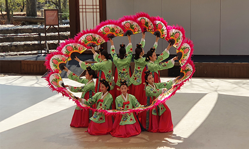

> 한국민속촌 > 민속촌소개
민속촌소개
한국민속촌 소개
대한민국을 대표하는 전통문화브랜드, 한국민속촌
“선조들의 지혜와 슬기를 체험할 수 있는 국내 유일의전통문화 테마파크 한국민속촌에 오신걸 환영합니다.”
한국민속촌은 오랜 시간을 거쳐 전승되어 온 우리 문화 속 생활풍속을 한데 모아 내외국인 관광객에게 민족문화를 소개하기 위해 조성되었습니다. 건립 초기부터 교육적 가치와 관광적 가치를 염두에 둔 최고의 전통문화 테마의 종합관광지를 목적으로 설립되어, 1974년 창립 이래 지금까지 생생한 문화체험과 아름다운 자연속의 전통문화 관광지로서 사랑받고 있습니다.
한국민속촌의 조선시대 마을은 각 지방에서 이건 및 복원한 실물가옥으로 이루어져 있으며, 철저한 고증과 자문을 거쳐 사계절 변화에 따라 생활문화를 재현하고 있습니다. 야외에서 만나는 체험형 전시와 전통방식을 계승한 생활공예, 절기별 세시풍속을 행하며 잊혀져 가는 전통 문화유산의 가치를 함께 나누고자 하는 노력을 계속하고 있습니다.
전통은 맥이 끊긴 낡은 유물이 아닌, 현대 생활 구석구석까지 녹아있는 우리 민족 삶의 양식입니다. 전통문화의 가치를 새롭게 발견하여 함께 누리고 나아가 세계에서 빛날 수 있게 보전해 가는 것이 한국민속촌의 역할입니다. 한국민속촌이 지켜가는 전통문화 속에서 과거와 현재를 경험하고, 미래를 열어갈 새로운 가치를 만나보시길 바랍니다.
시설 및 현황
아름다운 조선시대 마을 , 한국민속촌
- 한국민속촌 시설현황
- - 위치경기도 용인시 기흥구 민속촌로 90 (약30만평)
- - 대지면적30만평
- - 개관1974년 10월 3일(1973년 착공, 1974년 준공)
- - 건축면적29,000㎡
-
- 조선시대 가옥과 전통공방
- 우리나라 각 지역에 분포한 조선시대 가옥의 건축적 특징을 살필 수 있으며 전통 공예품을 만드는 9곳의 공방이 운영되고 있어 체험, 구매가 가능합니다.
- - 전시가옥 270여동
- - 공방: 9곳 (대장간, 옹기, 죽기, 목기 등)
- - 전통생활도구 2만여점 (목가구, 도자기, 농기류 등)
-
- 천혜의 환경 속에 자리한 아름다운 마을
- 한국민속촌의 마을은 배산임수의 풍수지리적 장소에 위치해 있습니다. 농경작업 또한 마을 정경에 풍취를 더하는 모습 중 하나입니다.
- - 한국민속촌 약 30만평(민속마을, 놀이마을
- - 사계절 전통 농경작업 (경작지 13,223㎡)
- - 80여종의 수종 및 전래작물 100여종(약초 30여종) 재배
-

- 어깨 춤이 절로 나는 흥겨움, 전통 예술 공연
- - 민속촌 메인 공연장 (약 500여명 수용)
- - 마상무예 공연장 (약 200여명 수용)
- - 전통혼례식장 (약 200여명 수용)
- - 가족공원 공연장 (약 200여명 수용)
-
- 정성이 가득 담긴 전통 먹거리 / 살거리
- - 상가지역 한식점 : 한국관, 길목집
- - 전통찻집 : 카페다락방, 민향, 한약방
- - 장터
- - 민속마을 매점 8개소
- - 놀이마을 음식점 : 레일로드, 민속반점 등
- - 기념품, 공방
-
- 아이들의 꿈이 자라는 놀이마을
- - 바이킹 외 놀이기구 15종
- - 겨울 눈썰매장
-
- 다양한 편의시설
- - 관광안내소, 의무실, 방송실, 미아보호실
- - 화장실 15개소, 휴식용 정자 약 30개소
- - 유모차대여소, 휠체어 대여소, 물품보관소 등